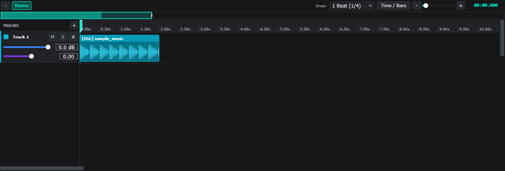
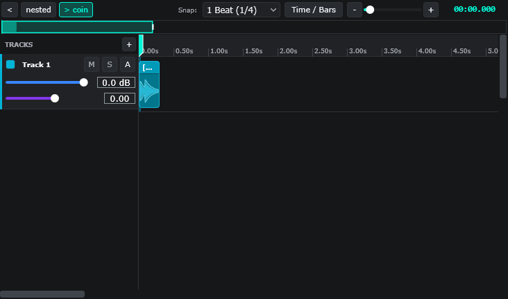
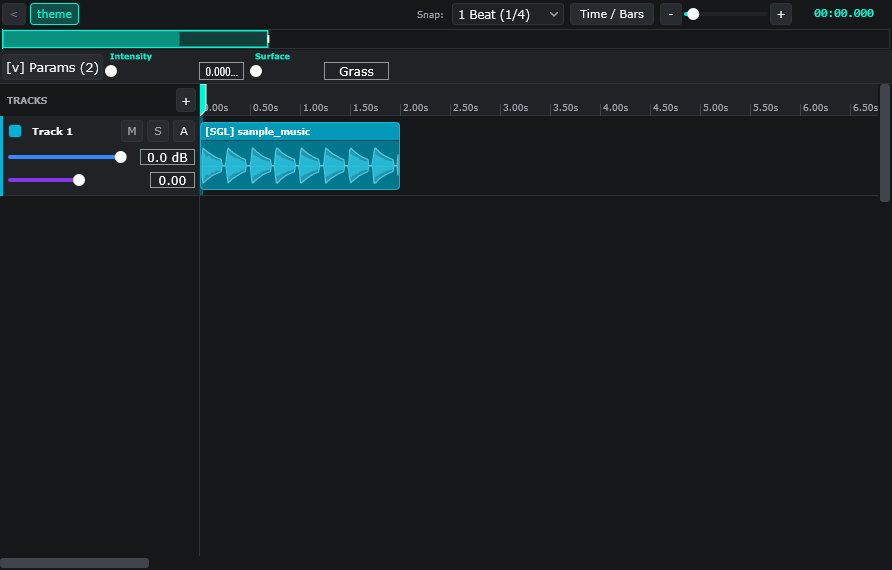
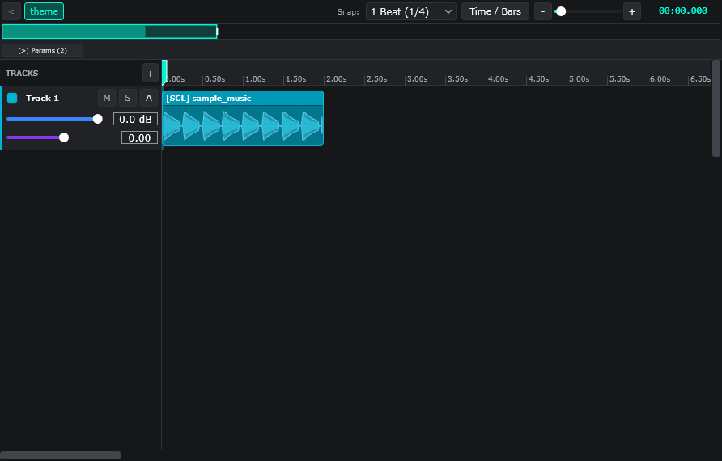

Capítulo 5 — Timeline, Faixas e Formas de Onda
A Timeline é o coração da autoria temporal do evento: posicione clipes ao milissegundo, defina camadas simultâneas em faixas coloridas, navegue em sub-eventos via breadcrumbs e molde o volume ao longo do tempo com automação e visualize waveforms poligonais.
1. Anatomia da Timeline

2. Navegação Hierárquica por Breadcrumbs

nested, a barra mostra o evento filho coin. Clique no nome do pai ou em < para voltar.No OpenAudio Studio, um evento pode conter clipes do tipo Event Instrument (que apontam para outros eventos do projeto). Em vez de trocar de seleção no navegador e perder a referência do evento pai, a Timeline inclui uma trilha de navegação (Breadcrumbs) no topo esquerdo.
Como navegar em eventos aninhados:
-
Duplo-clique no clipe: Dê duplo-clique sobre qualquer clipe com o badge
[EVT]na timeline. O Studio entra imediatamente no evento filho referenciado. -
Leitura da Trilha: A barra superior exibirá o caminho hierárquico (ex:
event:/music/theme > event:/music/stinger). -
Retorno em 1 Clique: Clique no botão voltar
←ou no nome do evento pai no breadcrumb para retornar imediatamente à timeline original.
3. Cores de Pista Customizáveis e Cabeçalhos
Em projetos complexos com dezenas de camadas simultâneas (como trilhas orquestrais ou veículos com 10 faixas de áudio), a organização visual é indispensável:
-
Swatch de Cor: Cada cabeçalho de pista (
TrackHeaderPanel) possui um seletor retangular de cor à esquerda. - Personalização de Cores: Clique sobre o swatch para abrir a paleta de cores. A cor escolhida tinge suavemente o cabeçalho e a linha de fundo da pista, permitindo categorizar rapidamente seções (por exemplo: verde para percussão, roxo para sintetizadores, azul para ventos e amarelo para foleys).
-
Controles de Audição em Tempo Real (
M,S,VolumeePan):- Botões
M(Mute) eS(Solo): aplicam silenciamento instantâneo (0 ms) nos barramentos nativos de cada faixa durante a audição local (sincronizados com o modo Layers e com o Inspector). Seguindo a convenção do FMOD Studio e do Mixer Deck, Mute vence Solo (uma faixa comMativo permanece muda mesmo comSligado, preservando apenas ancestrais na cadeiaoutput_trackquando háSativo). - Escopo exclusivo de audição:
MeSexistem apenas para isolar e comparar faixas no Studio; eles não disparam recompilação de prévia e não alteram os arquivos.bankpublicados para o jogo. - Sliders de
Volume(-80..10 dB) ePan(-1.0..1.0): refletem imediatamente no áudio em reprodução (incluindo via Undo/Redo, Play/Resume e reinício de loop) enquanto arrasta, adiando a recompilação definitiva da prévia até você soltar o controle.
- Botões
4. Waveforms Poligonais e Tipos de Instrumentos
O motor gráfico da Timeline desenha formas de onda vetoriais poligonais de alta fidelidade em duas camadas (silhueta de pico semitransparente e núcleo RMS interno) para todos os instrumentos sonoros:
| Tipo de Instrumento | Badge | Comportamento Técnico e Gráfico |
|---|---|---|
| Single Instrument | — | Reproduz uma amostra de áudio WAV fixa. Renderiza a waveform real com visualização precisa de transientes e silêncios. |
| Multi Instrument | [MLT] |
Contém uma playlist estocástica com pesos de probabilidade, variação aleatória de pitch/volume e lógica anti-repetição. |
| Event Instrument | [EVT] |
Dispara outro evento do projeto como sub-evento aninhado. Resolve recursivamente a waveform dos instrumentos filhos na timeline pai. |
| Scatterer Instrument | [SCT] |
Dispara entradas da playlist em intervalos sorteados, com limite de polifonia, variação por disparo e dispersão de ganho e pan. |
| Opção Async | Rótulo do tipo de instrumento | Em instrumentos compatíveis, marque Async no card do clipe, no Inspector. Depois do disparo, a voz pode avançar independentemente da posição do cursor. Configure o loop e a lógica de sustentação conforme o exercício de Sustain Point e Key Off. |
| Programmer Instrument | [PRG] |
Carrega amostras dinamicamente via chave de texto apontando para a audio_table ou atribuída em tempo de execução via API C# na Unity. |
| Command Instrument | [CMD] |
Instrumento sem áudio direto: executa comandos de disparo ou parada de outros eventos e ativação/desativação de snapshots. |
5. Command Instruments e Orquestração
Um Command Instrument agenda uma ação de evento ou snapshot na posição do clipe. Selecione-o para escolher a ação em Command Type e o destino válido em Command Target; o tipo de destino muda conforme a ação.
Os 4 Tipos de Comandos Disponíveis:
-
start_event: Dispara uma nova instância do evento alvo especificado emcommand_target. Útil para disparar cápsulas de bala ao atirar, partículas secundárias ou stingers musicais. -
stop_event: Solicita a parada (com fadeout suave ou imediato) das instâncias ativas do evento alvo. -
snapshot_on: Ativa um snapshot de mixagem na hierarquia do mixer (ex.: ativar o snapshot de menu de pausa ou ducking de combate). -
snapshot_off: Desativa o snapshot de mixagem, restaurando os faders e parâmetros do mixer aos seus valores nominais.
Os valores acima são os rótulos de autoria. Para um exercício executável, use event:/music/theme como evento de origem, event:/sfx/coin como alvo de start_event e snapshot:/pause_menu como alvo de snapshot_on/snapshot_off; esses recursos e os samples theme.wav e coin.wav vêm em example_project. O passo a passo está no tutorial de Command Instruments.
6. Parameter Sheets (PSHT): Timelines Guiadas por Parâmetros
Uma Parameter Sheet (PSHT) delimita em qual faixa de um parâmetro um instrumento pode disparar. O vínculo é feito no instrumento selecionado pelo Inspector, com Trigger Sheet, Sheet Min e Sheet Max; não se cria uma aba de Timeline separada.
Exemplos de aplicação:
-
Veículos e Motores: Vincule instrumentos a faixas de um parâmetro local
RPM(0 a 8000). Instrumentos sobrepostos podem tocar simultaneamente nas regiões configuradas; use fades para suavizar a soma. -
Velocidade de Movimento: O parâmetro
Speedtransita entre passos calmos, caminhada e corrida frenética. -
Saúde / Tensão: O parâmetro
Health(100 a 0) faz surgir gradualmente batimentos cardíacos e respiração ofegante conforme a vida do personagem cai.
Como criar e vincular um Trigger Sheet:
- Abra uma cópia de
example_project/project.jsone selecione o instrumentotheme.wavno eventoevent:/music/theme. Esse projeto já declara o parâmetro global contínuoMasterVolume, de0a1, com valor padrão0.8. - No Inspector do instrumento selecionado, escolha
MasterVolumeno campo Trigger Sheet. O vínculo passa a usar por padrão o domínio do parâmetro. - Defina Sheet Min como
0.4e Sheet Max como0.8. A faixa é inclusiva: o instrumento é elegível entre os dois limites e deixa de sê-lo quando o valor sai da faixa. - Na prévia, compare o instrumento com o valor de
MasterVolumedentro e fora da faixa e depois restaure0.8. Para exercitar um parâmetro local, selecione o evento no Inspector, use + Add Local Param → Continuous, nomeie-oRPMe defina Min0, Max8000e Default800. Selecione o instrumento de novo e escolhaRPMem Trigger Sheet. - Para transições suaves entre instrumentos sobrepostos, ajuste separadamente seus faders de ganho e fades. O intervalo Sheet Min/Max controla elegibilidade do instrumento; não é uma curva de automação de ganho.
Veja também os controles e o efeito do vínculo no Inspector e o exercício com os assets distribuídos.
7. Automação de volume no tempo
O botão A no cabeçalho da pista mostra ou recolhe a faixa de automação temporal de volume abaixo dos clipes. Essa faixa edita o ganho da pista ao longo do tempo; ela não exibe as curvas dirigidas por parâmetros configuradas no Inspetor.
- Na pista que deseja automatizar, clique em A. O botão fica destacado e aparece a faixa Volume Automation. Ela representa o volume da pista ao longo do tempo: a posição horizontal é o tempo em milissegundos e a posição vertical é o ganho em dB.
- Na faixa, dê duplo-clique na grade para inserir um ponto. Arraste um ponto existente para mudar seu tempo e valor em dB. Clique novamente em A para recolher a faixa; ao expandi-la, os pontos continuam disponíveis.
- Em uma pista sem automação temporal de volume, clique em A para abrir a grade vazia e dê duplo-clique para criar o primeiro ponto. Isso cria a curva temporal de volume sem substituir curvas por parâmetro do Inspetor.
- Para excluir um ponto, clique nele e pressione Delete ou Backspace. A tecla atua na faixa enquanto ela estiver focada e o mesmo resultado aparece no menu de contexto do ponto, na opção Delete Point.
- Excluir o último ponto remove a curva temporal de volume da pista e devolve a faixa à grade vazia. Clique em um clipe antes de pressionar Delete quando quiser remover o clipe: a tecla age sobre o último alvo clicado, não sobre a automação.
- Leitura da curva: A faixa usa uma representação visual em fita (ribbon) para mostrar a evolução do ganho da pista; a cor e o preenchimento são recursos visuais, não representam uma segunda curva.
- Interpolação: Arraste um ponto existente para ajustar seu tempo e valor. A linha segue o formato configurado para o segmento; os pontos definem valores em tempo e dB.
- Undo/Redo Integrado: Cada arraste, inserção ou exclusão de ponto é registrado como uma ação no histórico (Ctrl + Z). Uma exclusão desfeita devolve o ponto; a remoção da curva pelo último ponto é restaurada inteira com um único Ctrl + Z.
Para curvas dirigidas por um parâmetro (por exemplo, MasterVolume → volume, pitch ou pan), consulte Curvas por parâmetro no Inspetor.
8. Snap Magnético e Gestos de Edição de Clipes
| Gesto do Mouse | Ação na Timeline | Comportamento com Snap |
|---|---|---|
| Arrastar o corpo do clipe | Move a posição de início (Start Time) do som. | Gruda no marcador de tempo, compasso ou batida mais próximo conforme o modo de Snap selecionado. |
| Arrastar as bordas laterais | Redimensiona a duração visível da região do clipe. | Corta ou estende a janela de reprodução da amostra. |
| Arrastar canto superior interno | Ajusta a duração do Fade In (início) ou Fade Out (fim). | Calcula a atenuação exponencial suave da entrada ou saída. |
| Botão direito na régua | Abre o menu contextual de marcadores e lógica. | Permite adicionar Markers, Loops, Transition Markers e Sustain Points na posição clicada. |
9. Importação de Áudio por Drag-and-Drop Direto
O fluxo de trabalho ágil de sound design no OpenAudio Studio permite arrastar arquivos de áudio diretamente do sistema operacional para a Timeline:
-
Formatos Aceitos: Arquivos
.wav,.ogg,.mp3e.flac. Arquivos não suportados são rejeitados sem alterar o projeto. -
Criação Instantânea de Instrumento: Ao soltar um arquivo sobre qualquer pista (
TimelineTrackLane), o Studio copia o arquivo paraassets/(caso não esteja lá), registra o sample noproject.jsone insere um Single Instrument exatamente na posição temporal do mouse, com a duração exata do arquivo de áudio e visualização imediata da forma de onda poligonal. - Múltiplos Arquivos em Sequência: Arrastar múltiplos arquivos cria os respectivos instrumentos encadeados a partir da posição inicial do cursor.
- Undo/Redo Atômico: Toda a operação (cópia de arquivo, cadastro de sample e inserção de clipe) é consolidada em um único passo de desfazer/refazer (Ctrl+Z e Ctrl+Y).
9.1 Seleção de Pista e Criação Contextual na Raia da Timeline
Além do arraste de arquivos e dos botões do Inspector, você pode selecionar pistas e inserir qualquer tipo de instrumento diretamente sobre a área vazia da raia (TimelineTrackLane):
- Seleção Rápida de Pista: Um clique esquerdo em qualquer área vazia da raia seleciona a pista correspondente no modelo de autoria e traz o TrackCard para o topo do Inspector.
-
Criação na Posição Temporal Exata: Um clique direito em área vazia da raia abre o menu contextual com o submenu
Add Instrument(Single,Multi,Scatterer,Programmer,Event,CommandeSilence). O novo instrumento é criado com seu início (offset_ms) posicionado exatamente no instante horizontal clicado.
10. Fita Retrátil de Parâmetros Contextuais (Timeline Parameter Strip)
Durante a edição e audição de eventos na Timeline, o sound designer frequentemente precisa testar como o áudio responde a parâmetros de controle — como a intensidade do combate, a aceleração de um veículo ou o tipo de terreno sob os passos — enquanto acompanha simultaneamente o avanço da agulha (playhead) sobre os clipes.
Para isso, a Timeline Parameter Strip foi posicionada estrategicamente entre o minimapa superior e a régua de tempo. Ela exibe exclusivamente os parâmetros que têm efeito prático no evento ativo.

[v] LIVE PARAMS (2)): pílulas em bgDark com sliders dedicados, exibição do rótulo nominal para parâmetros labeled e badge interativo para estados booleanos.
Comportamento Inteligente e Recursos da Fita
- Filtro de Contexto Automático: A fita inspeciona o evento selecionado. Se o evento não consome parâmetros (nem locais, nem referências globais em automações ou condições), a fita se recolhe automaticamente para altura zero, liberando 100% da área vertical para as pistas de áudio.
-
Alternância Compacta / Expandida: Ao clicar no botão
[v] LIVE PARAMS (N), a fita se comprime em uma barra discreta de 24 px ([>] LIVE PARAMS (N)) ocultando as pílulas para momentos em que você deseja focar exclusivamente no alinhamento de clipes. Clique novamente para expandir para 42 px. -
Exibição Nominal para Parâmetros Rotulados (Labeled): Em parâmetros com estados definidos (como
Grass,Stone,Water), a caixa de leitura à direita exibe o nome textual do estado atual em vez de um índice numérico abstrato (0, 1 ou 2). -
Restauração Rápida (Reset): Dê um duplo-clique sobre qualquer slider para retornar imediatamente o parâmetro ao seu valor padrão (
default_value).

] Params">[>] LIVE PARAMS (2)): economia de espaço vertical sem perder o indicador de parâmetros vinculados ao evento.
- Selecione um evento que contenha parâmetros vinculados (ex:
event:/music/theme). - Observe que a fita surge logo acima da régua com o botão
[v] LIVE PARAMS (N)e os sliders dos parâmetros contextuais. - Pressione Espaço ou clique em Play na Barra de Transporte para iniciar a reprodução da timeline.
- Enquanto o áudio toca e a agulha avança pelas formas de onda, arraste o slider
Intensityou o seletorSurface. Você ouvirá instantaneamente as automações modulando filtros e volumes em tempo real! - Dê duplo-clique no fader para voltar ao valor padrão.
11. Modo Layers (LayerStackView): Stems Adaptativos e Máscaras por Parâmetro
Para trilhas adaptativas baseadas em stems verticais e ambiências em camadas, o palco oferece o modo Layers (LayerStackView), acessível pelo seletor segmentado centralizado [ Timeline | Layers ] no cabeçalho de 38 px (StageModeHeader). O modo Timeline continua sendo o padrão ao abrir um evento e exibe uma sub-barra exclusiva de 28 px para Snap, formato e Zoom, enquanto a alternância para Layers oculta a sub-barra temporal e mantém a faixa LIVE PARAMS ativa no topo para audição ao vivo.
Anatomia dos Cards Bipartidos
-
Coluna Esquerda — Stem & Mix (350 px): Reúne a faixa de cor da pista, o botão de Visibilidade (Olho) sincronizado com o estado de
Mute, o botãoS(Solo), o nome da camada, o badge de repetição (LOOPou1-SHOT), a miniatura poligonal da waveform e o slider de Opacidade (0%–100%) mapeado para o volume em dB da faixa com registro no histórico de Undo/Redo. -
Coluna Direita — Máscara de Ativação (0.0 – 1.0): Permite vincular qualquer parâmetro local ou global (ou manter em Sempre Ativo), ajustar a faixa ativa
[min .. max]e configurar o Fade (%) em uma barra horizontal plana de 10 px com rampas translúcidas nas extremidades e legendaAtiva: X – Y. Todas as barras compartilham o mesmo alinhamento horizontal e exibem o cursor vertical em ciano acompanhando o valor ao vivo (Cursor ao vivo: $param = val), além doOaeStatusBadgede estado (TOCANDO (%),BASE ATIVA,AGUARDANDOouMUTADO (0%)). -
Preservação Não-Destrutiva (Round-Trip): Cada máscara gera e lê diretamente uma curva de automação de
volumevinculada ao parâmetro na faixa (com Undo/Redo atômico). Caso a faixa já possua uma curva manual complexa na Timeline, o card exibe o aviso Curva Personalizada com o botãoEditar na Timelinesem sobrescrever os pontos existentes. -
Camadas de Ajuste (Adjustment Layer): Efeitos vinculados por parâmetro no evento ou no barramento de destino são destacados no topo da pilha com alternância rápida de bypass e seleção sincronizada com o Inspetor e o
EffectChainDeck.
- Abra o evento desejado e clique em Layers no seletor
[ Timeline | Layers ]no canto superior direito da barra do palco. - Clique em + Stem Layer na barra superior ou arraste arquivos de áudio (
.wav,.ogg,.mp3,.flac) diretamente sobre a área da pilha para importar o sample e criar uma faixa comSingle Instrumentconfigurado emloop = trueem um único passo de Undo/Redo. - Clique sobre qualquer card para sincronizar imediatamente o Inspector e ajuste a Opacidade ou os botões Olho e S durante a audição.
- Selecione um parâmetro na coluna direita de cada stem e arraste as alças da máscara para coreografar a entrada e saída de cada camada ao mover o slider correspondente na Timeline Parameter Strip.